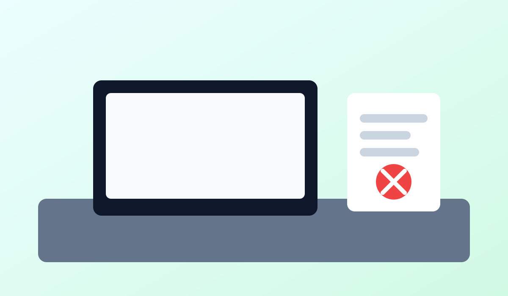

Digital Detox Blog
How to Stay Productive Without Constant Notifications
Notifications fragment attention and make deep work harder. Productivity improves when you batch communication instead of reacting instantly.
Use focused sessions, check messages at scheduled times, and keep only critical alerts enabled. This reduces context switching and mental fatigue.
Protect your best energy hours for meaningful tasks before opening social or chat apps.
Back to Blog